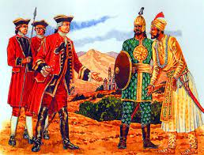

The Battle of Plassey was a decisive victory of the British East India Company, under the leadership of Robert Clive, over the Nawab of Bengal and his French[1] allies on 23 June 1757. The victory was made possible by the defection of Mir Jafar, Nawab Siraj-ud-Daulah's commander in chief. The battle helped the British East India Company take control of Bengal in 1772. Over the next hundred years, they continued to expand their control over vast territories in rest of the Indian subcontinent, including Burma.
The battle took place at Palashi (Anglicised version: Plassey) on the banks of the Hooghly River, about 150 kilometres (93 mi) north of Calcutta (now Kolkata) and south of Murshidabad in West Bengal, then capital of Bengal Subah. The belligerents were the British East India Company, and the Nawab Siraj-ud-Daulah, the last independent Nawab of Bengal. He succeeded Alivardi Khan (his maternal grandfather). Siraj-ud-Daulah had become the Nawab of Bengal the year before, and he had ordered the English to stop the extension of their fortification. Robert Clive bribed Mir Jafar, the commander-in-chief of the Nawab's army, and also promised to make him Nawab of Bengal. Clive defeated Siraj-ud-Daulah at Plassey in 1757 and captured Calcutta.
The battle was preceded by an attack on British-controlled Calcutta by Nawab Siraj-ud-Daulah and the Black Hole massacre. The British sent reinforcements under Colonel Robert Clive and Admiral Charles Watson from Madras to Bengal and recaptured Calcutta. Clive then seized the initiative to capture the French fort of Chandannagar.[3] Tensions and suspicions between Siraj-ud-daulah and the British culminated in the Battle of Plassey. The battle was waged during the Seven Years' War (1756–1763), and, in a mirror of their European rivalry, the French East India Company (La Compagnie des Indes Orientales)[1] sent a small contingent to fight against the British. Siraj-ud-Daulah had a vastly numerically superior force and made his stand at Plassey. The British, worried about being outnumbered, formed a conspiracy with Siraj-ud-Daulah's demoted army chief Mir Jafar, along with others such as Yar Lutuf Khan, Jagat Seths (Mahtab Chand and Swarup Chand), Umichand and Rai Durlabh. Mir Jafar, Rai Durlabh and Yar Lutuf Khan thus assembled their troops near the battlefield but made no move to actually join the battle. Siraj-ud-Daulah's army with about 50,000 soldiers (including defectors), 40 cannons and 10 war elephants was defeated by 3,000 soldiers of Col. Robert Clive, owing to the flight of Siraj-ud-Daulah from the battlefield and the inactivity of the conspirators. The battle ended in approximately 11 hours.
This is judged to be one of the pivotal battles in the control of Indian subcontinent by the colonial powers. The British now had a great deal of influence over the Nawab, Mir Jafar, and as a result, they were able to get important concessions for earlier losses and trade income. The British further used this revenue to increase their military might and push the other European colonial powers such as the Dutch and the French out of South Asia, thus expanding the British Empire.